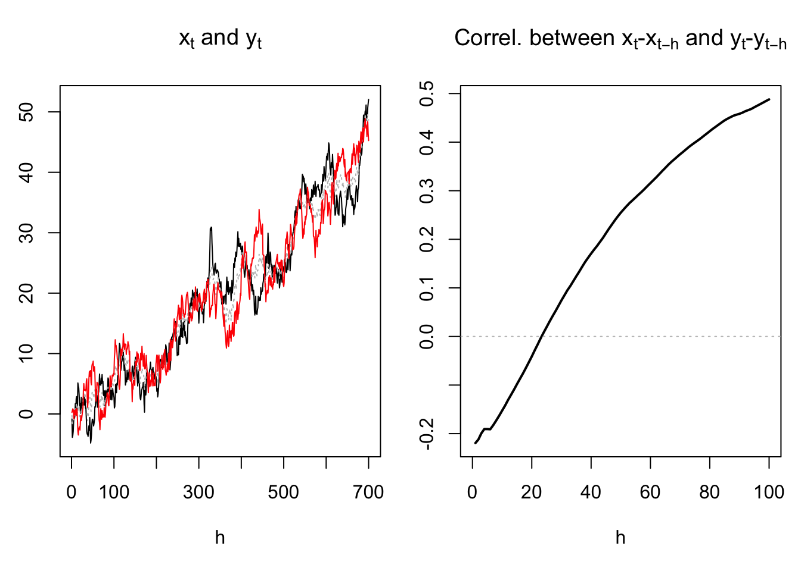
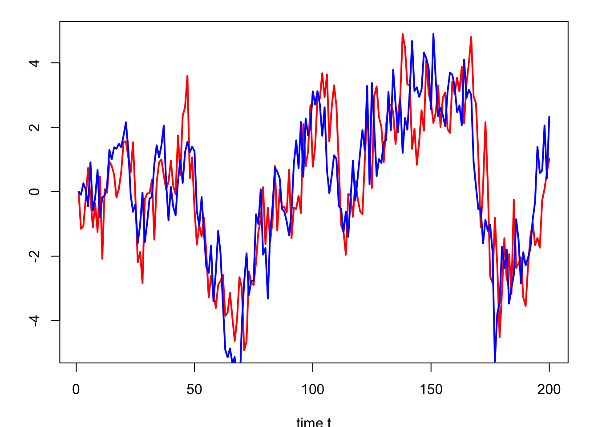

Chapter 6 Introduction to cointegration
6.1 Intuition
Many statistical procedures are well-defined only when the processes of interest are stationary. As a result, especially when one wants to investigate the joint dynamics of different variables, one often begins by making the data stationary (by, e.g., taking first differences or removing deterministic trends). However, doing so may remove information from the data. Heuristically, removing trends amounts to filtering out the long-run variations of the series. However, it may be the case that the different variables interact in the short run and in the long run.
For instance, the left plot of Figure 6.1 suggests that the trends of \(x_t\) and \(y_t\) are positively correlated. However, the right plot shows that, for low values of \(h\), the correlation between \(x_t - x_{t-h}\) and \(y_t - y_{t-h}\) is negative. This is notably the case for \(h=1\), which means that the first differences of the two variables (i.e., \(\Delta x_t\) and \(\Delta y_t\)) are negatively correlated. Hence, focusing on the first differences would lead the researcher to think that the relationship between \(x_t\) and \(y_t\) is a negative one (while it is only the case when one focuses on the high-frequency comovements between the two variables).

Figure 6.1: Situation where the conditional and uncondional correlation between \(x_t\) and \(y_t\) do not have the same sign.
Definition 6.1 (Integrated variables) A univariate process \(\{y_t\}\) is said to be \(I(d)\) if its \(d^{th}\) difference is stationary (but not its \((d-1)^{th}\) difference).
For instance:
- If \(y_t\) is not stationary but \(\Delta y_t = y_t - y_{t-1}\) is, then \(y_t\) is \(I(1)\).
- If \(\Delta y_t\) is not stationary but \(\Delta^2 y_t=\Delta(\Delta y_t)\) is, then \(y_t\) is \(I(2)\).
- If \(y_t\) is stationary then \(y_t\) is \(I(0)\).
6.2 The bivariate case
If we regress an \(I(1)\) variable \(y_t\) on another independent \(I(1)\) variable \(x_t\), the usual (OLS-based) t-tests on regression coefficients often (misleadingly) show statistically significant coefficients (we then speak of spurious regressions, see Section 5). A solution is to regress \(\Delta y_t\) (that is \(I(0)\)) on \(\Delta x_t\) and then inference will be correct. However, as stated above, the economic interpretation of the regression then changes, as doing so amounts to focusing on the high-frequency movements of the variables.
Let us now consider the case where \(y_t\) and \(x_t\) are still \(I(1)\), but where they satisfy: \[\begin{equation} y_t = \beta x_t + \varepsilon_t,\tag{6.1} \end{equation}\] with \(\varepsilon_t \sim I(0)\). That is, there is a linear combination of the two \(I(1)\) variables that is \(I(0)\).
In that case, the convergence of \(b\), the OLS estimate of \(\beta\), is fast. Indeed, the convergence rate is in \(1/T\) (versus \(1/\sqrt{T}\) in the purely stationary case). This stems from the properties of non-statinary processes that are stated in Prop. 6.1. We have: \[ b_T = \frac{\sum_t x_t y_t}{\sum_t x_t^2} = \frac{\sum_t x_t (\beta x_t + \varepsilon_t)}{\sum_t x_t^2} = \beta + \frac{\sum_t x_t \varepsilon_t}{\sum_t x_t^2}. \] In particular, if \(\varepsilon_t\) was a white noise, using properties (ii) and (iv) of Prop. 6.1, we would get: \[\begin{equation} b_T \approx \beta + \frac{1}{T}\frac{\int_{0}^{1}x_{\infty}(r)dW^{\varepsilon}_r}{\int_{0}^{1}x^2_{\infty}(r)dr}.\tag{6.2} \end{equation}\] where the random variables \(x^2_{\infty}\) and \(W^{\varepsilon}_r\) are defined in Prop. 6.1.
Proposition 6.1 (Properties of an I(1) process) If \(\{y_t\}\) is \(I(1)\) and such that \(y_t - y_{t-1} = H(L)\varepsilon_t\) where \(H(L)\varepsilon_t\) is \(I(0)\), then:
- \(\dfrac{1}{\sqrt{T}}\bar{y}_T \overset{d}{\rightarrow} \int_{0}^{1}y_{\infty}(r)dr\),
- \(\dfrac{1}{T^2}\sum_{t=1}^T y_t^2 \overset{d}{\rightarrow} \int_{0}^{1}y^2_{\infty}(r)dr\),
- \(\dfrac{1}{T}\sum_{t=1}^T y_t(y_t-y_{t-1}) \overset{d}{\rightarrow} \dfrac{1}{2}y^2_{\infty}(1) + \dfrac{1}{2}\mathbb{V}ar(y_t - y_{t-1})\),
- \(\dfrac{1}{T}\sum_{t=1}^T y_t \eta_t \overset{d}{\rightarrow} \sigma_\eta \int_{0}^{1}y_{\infty}(r)dW_r^{\eta}\) where \(\eta_t\) is a white noise of variance \(\sigma_\eta^2\),
where \(y_{\infty}(r)\) is of the form \(\omega W_r\) (\(W_r\) being a Brownian motion (see extra material), with \(\omega = \sum_{k=-\infty}^{\infty} \gamma_k\), the \(\gamma_k\)s being the autocovariances of \(H(L)\varepsilon_t\), and where \(\eta_{\infty}(r)\) is of the form \(\sigma_\eta W^{\eta}_r\) (\(W^{\eta}_r\) Brownian motion “associated” to \(\eta_t\)).
Proof. (of 1) We have: \[ \dfrac{1}{\sqrt{T}}\bar{y}_T = \frac{1}{T}\sum_{t=1}^{T}\frac{y_{t}}{\sqrt{T}} = \frac{1}{T}\sum_{t=1}^{T}\tilde{y}_T(t/T), \] where \(\tilde{y}_T(r)=(1/\sqrt{T})y_{[rT]}\). Now \(\tilde{y}_T(r) = r \sqrt{T} \left(\frac{1}{Tr}\sum_{t=1}^{[Tr]} H(L)\varepsilon_t\right)\). By Eq. (1.4) in Theorem 1.1, we have \(\sqrt{r}\sqrt{Tr} \left(\frac{1}{Tr}\sum_{t=1}^{[Tr]} H(L)\varepsilon_t\right) \rightarrow \omega W_r\). Therefore, for large \(T\), \(\frac{1}{T}\sum_{t=1}^{T}\tilde{y}_T(t/T)\) approximates \(\frac{1}{T}\sum_{t=1}^{T} \omega W_{t/T}\), which is a Riemann sum that converges to \(\int_{0}^{1}y_{\infty}(r)dr\).
6.3 Multivariate case and VECM
In the following, we consider an \(n\)-dimensional vector \(y_t\). Moreover, \(\varepsilon_t\) is an \(n\)-dimensional white noise process. The notion of integration (Def. 6.1) can also be defined in the multivariate case:
Definition 6.2 (Order of integration (multivariate case)) \(\{y_t\}\) is \(I(d)\) if \[\begin{equation} (1-L)^dy_t = \mu + H(L)\varepsilon_t,\tag{6.3} \end{equation}\] where \(H(L)\varepsilon_t\) is a stationary process (but \((1-L)^{d-1}y_t\) is not).
Definition 6.3 (Cointegration) If \(y_t\) is integrated of order \(d\), then its components are said to be cointegrated if there exists a linear combination of the components of \(y_t\) that is integrated of an order equal to, or lower than, \(d-1\).
For instance, Eq. (6.1) implies that \([1,-\beta]'\) is a cointegrating vector and that \([y_t,x_t]'\) is cointegrated.
Consider an \(I(1)\) process, \(y_t\), that is such that the Wold representation of \(\Delta y_t\) is Eq. (6.3). We have: \[ y_t = \mu + H(L)\varepsilon_t + y_{t-1} = t \mu + H(L)(\varepsilon_t + \varepsilon_{t-1} + \dots + \varepsilon_1) + y_0. \]
It can be shown that: \[ y_t = t \mu + H(1)(\varepsilon_t + \varepsilon_{t-1} + \dots + \varepsilon_1) + \xi_t, \] where \(\xi_t\) is a stationary process.
Assume that \(y_t\) possesses a cointegrating vector \(\pi\) such that \(\pi' y_t\) is a (univariate) stationary process.
Necessarily, we must have \(\pi' \mu = 0\) and \(\pi' H(1)=0\). Reciprocally, if \(\pi' \mu = 0\) and \(\pi' H(1)=0\), then \(\pi\) is a cointegrating vector of \(y_t\). This proves the following proposition:
Proposition 6.2 (Necessary and sufficient conditions of cointegration) If \(y_t\) is \(I(1)\) and admits the Wold representation Eq. (6.3), with \(d=1\), then \(\pi\) is a cointegrating vector if and only if (iff): \[ \pi' \mu = 0 \mbox{ (scalar equation) and }\pi' H(1)=0\mbox{ (vectorial equation)}. \]
Consider the following VAR(p) model, where \(y_t\) is \(I(1)\): \[\begin{equation} y_t = c + \Phi_1 y_{t-1} + \dots + \Phi_p y_{t-p} + \varepsilon_t,\tag{6.4} \end{equation}\] or \(\Phi(L)y_t = c + \varepsilon_t\) where \(\Phi(L) = I - \Phi_1 L - \dots - \Phi_p L^p\).
Suppose that the Wold representation of \(\Delta y_t\) is Eq. (6.3). Premultiplying Eq. (6.3) by \(\Phi(L)\) gives: \[ (1-L)\Phi(L)y_t = \Phi(1)\mu + \Phi(L)H(L)\varepsilon_t, \] or \[ (1-L)\varepsilon_t = \Phi(1)\mu + \Phi(L)H(L)\varepsilon_t. \] Taking the expectation on both sides gives \(\Phi(1)\mu=0\). Therefore, for the previous equation to hold for any \(\varepsilon_t\), we must have \[ (1-L) Id = \Phi(L)H(L). \] The previous equality implies that \((1-z) Id = \Phi(z)H(z)\) for all \(z\). In particular, for \(z=1\): \[ 0 = \Phi(1)H(1). \]
Take any row \(\pi'\) of \(\Phi(1)\). Since \(\Phi(1)\mu=0\), we have \(\pi'\mu=0\) (scalar equation). Since \(\Phi(1)H(1)=0\), we have \(\pi' H(1)=0\) (vectorial equation). Prop. 6.2 then implies that the rows of \(\Phi(1)\) are cointegrating vectors of \(y_t\). Therefore, if \(\{a_1,\dots,a_h\}\) constitutes a basis for the space of cointegrating vectors, then \(\pi\) can be expressed as a linear combination of the \(a_i\)’s. That is, we must have: \[ \pi = [a_1 \quad a_2 \quad \dots \quad a_h]b = \underbrace{A}_{n\times h}\underbrace{b}_{h \times 1}, \] where \(A = [a_1 \quad a_2 \quad \dots \quad a_h]\).
Since this is true for all rows of \(\Phi(1)\), it comes that this matrix is of the form: \[\begin{equation} \underbrace{\Phi(1)}_{n\times n} = \underbrace{B}_{n\times h}\underbrace{A'}_{h\times n}.\tag{6.5} \end{equation}\] This shows that the number of independent cointegrating vectors—he order of cointegration of \(y_t\)—is the rank of \(\Phi(1)\). This has important implications for the dynamics of \(\Delta y_t\).
Consider a process \(y_t\) whose VAR representation is as in Eq. (6.4). This VAR representation can be rewritten: \[\begin{equation} y_t = (c + \rho y_{t-1}) + \zeta_1 \Delta y_{t-1} + \dots + \zeta_{p-1} \Delta y_{t-p+1} + \varepsilon_t,\tag{6.6} \end{equation}\] where \(\zeta_k = - \Phi_{k+1} - \dots - \Phi_{p}\) and \(\rho = \Phi_1 + \dots + \Phi_p\).
Example 6.1 (VAR(2)) For a VAR(2) with \(y_t = c + \Phi_1 y_{t-1}+ \Phi_2 y_{t-2} + \varepsilon_t\), we have: \[ y_t = c + \{\Phi_1 + \Phi_2\} y_{t-1} + \{-\Phi_2\} \Delta y_{t-1} + \varepsilon_t, \]
Subtracting \(y_{t-1}\) from both sides of Eq. (6.6) and remarking that \(-\Phi(1) = \rho - Id\) (recall that \(\Phi(L) = I - \Phi_1 L - \dots - \Phi_p L^p\)), we get: \[ \Delta y_t = \{c - \underbrace{\Phi(1) y_{t-1}}_{=BA'y_{t-1}}\} + \zeta_1 \Delta y_{t-1} + \dots + \zeta_{p-1} \Delta y_{t-p+1} + \varepsilon_t. \]
Using Eq. (6.5), and denoting by \(z_t\) the \(h\)-dimensional vector \(A'y_{t}\), we obtain the error correction representation of the cointegrated variable \(y_t\): \[\begin{equation} \boxed{\Delta y_t = c - B z_{t-1} + \zeta_1 \Delta y_{t-1} + \dots + \zeta_{p-1} \Delta y_{t-p+1} + \varepsilon_t.}\tag{6.7} \end{equation}\] This type of model is called Vector Error Correction Model (VECM). This is because the components of \(z_t\) can be considered as errors that, multiplied by the components of \(B\) generate correction forces that imply that, in the long run, the congregation relationships are satisfied. Example 6.2 illustrates this.
Example 6.2 (VECM example) Consider the VAR(1) process \(y_t\) that follows: \[ y_t = \Phi_1 y_{t-1} + \varepsilon_t = \left[\begin{array}{cc} 0.5 & 0.5 \\ 0.2 & 0.8 \\ \end{array} \right] y_{t-1} + \varepsilon_t, \quad \varepsilon_t \sim i.i.d. \mathcal{N}(0,\Sigma) \]
1 is an eigenvalue of \(\Phi_1\) and \(y_t\) is \(I(1)\). We have: \[ \Phi(1) = Id - \left[\begin{array}{cc} 0.5 & 0.5 \\ 0.2 & 0.8 \\ \end{array} \right] = \left[\begin{array}{cc} 0.5 & -0.5 \\ -0.2 & 0.2 \\ \end{array} \right], \] which is of rank 1. Therefore \(y_t\) is cointegrated of order 1.
For that process, Eq. (6.7) writes: \[ \Delta y_{t} = - \left[\begin{array}{cc} 0.5 & -0.5 \\ -0.2 & 0.2 \end{array} \right] y_{t-1} + \varepsilon_t = \left[\begin{array}{c} -0.5\\ 0.2 \end{array} \right] z_{t-1} + \varepsilon_t, \] where \(z_{t} = y_{1,t}-y_{2,t}\).
The process \(z_t\) is stationary (we have \(z_t = 0.3 z_{t-1} + \varepsilon_{1,t} - \varepsilon_{2,t}\)).
We say that there is a long-run relationship between \(y_{1,t}\) and \(y_{2,t}\):
When \(y_{1,t}\) is substantially above \(y_{2,t}\), \(z_t\) is large, the influence of \(-0.5 z_t\) on \(\Delta y_{1,t+1}\) is negative, which tends to “correct” \(y_{1,t}\) and brings it closer to \(y_{2,t}\).

Figure 6.2: Simulation of \(y_{1,t}\) (in blue) and \(y_{2,t}\) (in red).
6.4 Cointegration in practice
Assume that we have a vector of variables \(y_t\) and that we want to investigate the joint dynamics of its components. If the \(y_{i,t}\)s are \(I(1)\), we may need to use a VECM. Therefore, in the first place, one has to test for the stationarity of \(y_t\)’s components (see Section 5).
If the components of \(y_t\) are \(I(1)\), one has to determine the existence of cointegrating vectors. There are two general possibilities to do this:
- The theory provides us with relevant cointegration relationships, for instance:
- The Purchasing Power Parity (PPP) suggests the existence of a long-run relationship between domestic prices, foreign prices, and the exchange rate.
- If real rates are stationary, the Fisher equation (\(r=i-\pi\)) implies a cointegration relatinsip between the nominal interest rate (\(i\)) and inflation \(\pi\).
- We have no a priori regarding the cointegration relationship. We have to estimate (and test) the potential cointegration relationship.
In the first case, we proceed in two steps: a. If \(\pi^*\) is suspected to be a cointegrating vector, we can then use unit-root or stationarity tests on \(z_t={\pi^*}' y_t\) (see Section 5). b. Estimate Eq. (6.7) by OLS.
In the following, we focus on the second case, when there is at most one cointegration relationship. (In the general case, one can for instance implement the Johansen (1991) approach.)
Engle and Granger (1987) propose a two-step estimation procedure to estimate error-correction models. This method proceeds under the assumption that there is a single cointegration equation, i.e. \(A' = [\alpha_1,\dots,\alpha_n]\). (Recall that \(\Phi(1) = BA'\), see Eq. (6.5).) Without loss of generality, one can set \(\alpha_1=1\). In that case, the cointegration relationship, if it exists, is of the form: \[ y_{1,t} = - \alpha_2 y_{2,t} - \dots - \alpha_n y_{n,t} + z_t, \] where \(z_t \sim I(0)\).
The first step consists in estimating the previous equation by OLS (regression of \(y_{1,t}\) on \(y_{2,t},\dots,y_{2,t}\)). The second step consists in estimating Eq. (6.7) also by OLS, after having replaced \(z_{t-1}\) by the (lagged) residuals of the first step OLS regression (\(\hat{z}_{t-1}\)). Because of high speed convergence of the first-step regression (the convergence is in \(1/T\), see Eq. (6.2)), the asymptotic properties of the second-step estimates are the standard ones. That is, one can use the standard t-statistic to assess the statistical significativity of the parameters.
It remains to explain how to test for the existence of a cointegration relationship. This amounts to testing whether \(z_t\) is stationary. Note however that we do not observe the “true” \(z_t\), but only OLS-based estimates \(\hat{z}_t\). Therefore, the critical values of the usual unit-root tests are not the same. The appropriate critical values are given by P. C. B. Phillips and Ouliaris (1990).
Example 6.3 (VECM for US inflation and nominal interest rate) The data are as in Example 5.1. In the first step, we compute \(z_t\) and use P. C. B. Phillips and Ouliaris (1990)’s test to see whether the two variables are cointegrated:
library(IdSS);library(tseries)
T <- dim(US3var)[1]
infl <- US3var$infl
i <- US3var$r
eq <- lm(i~infl)
z <- eq$residuals
po.test(cbind(i,infl))##
## Phillips-Ouliaris Cointegration Test
##
## data: cbind(i, infl)
## Phillips-Ouliaris demeaned = -29.484, Truncation lag parameter = 2,
## p-value = 0.01We reject the null hypothesis of unit root in the residuals. That is, the results are in favor of cointegration. Let us then esitmate the VECM model; this amounts to running two OLS regressions:
infl_1 <- c(NaN,infl[1:(T-1)])
infl_2 <- c(NaN,NaN,infl[1:(T-2)])
infl_3 <- c(NaN,NaN,NaN,infl[1:(T-3)])
i_1 <- c(NaN,i[1:(T-1)])
i_2 <- c(NaN,NaN,i[1:(T-2)])
i_3 <- c(NaN,NaN,NaN,i[1:(T-3)])
z_1 <- c(NaN,z[1:(T-1)])
dinfl <- infl - infl_1
dinfl_1 <- infl_1 - infl_2
dinfl_2 <- infl_2 - infl_3
di <- i - i_1
di_1 <- i_1 - i_2
di_2 <- i_2 - i_3
eq1 <- lm(di ~ z_1 + dinfl_1 + di_1 + dinfl_2 + di_2)
eq2 <- lm(dinfl ~ z_1 + dinfl_1 + di_1 + dinfl_2 + di_2)Table 6.1 reports the estimated coefficients in eq1 and eq2, together with their p-values:
| Coef Y1 | p-values Y1 | Coef Y2 | p-values Y2 | |
|---|---|---|---|---|
| (Intercept) | -0.0189 | 0.8093 | -0.0047 | 0.9457 |
| z_1 | -0.1040 | 0.0014 | -0.0034 | 0.9046 |
| dinfl_1 | 0.0224 | 0.7852 | -0.3845 | 0.0000 |
| di_1 | -0.0841 | 0.2225 | 0.1196 | 0.0473 |
| dinfl_2 | 0.0322 | 0.6864 | -0.2238 | 0.0014 |
| di_2 | -0.0393 | 0.5625 | 0.0828 | 0.1626 |
Imporantly, one of the parameters associated with \(z_{t-1}\) (parameters that are called speeds of adjustement) is significant and with the expected signs: if the short term nominal interest rate \(i_t\) is high then \(z_t\) becomes positive (since, up to an intercept, \(z_t = i_t - \beta \pi_t\), where \(\beta\) comes from the first-step regression), but since \(B_{1,1}\) is negative (it is equal to -0.104), a positive \(z_t\) will generate a negative correction (i.e., \(B_{1,1}z_t\)) for \(i_{t+1}\) on date \(t+1\), thereby “correcting” the high level of \(i_t\).